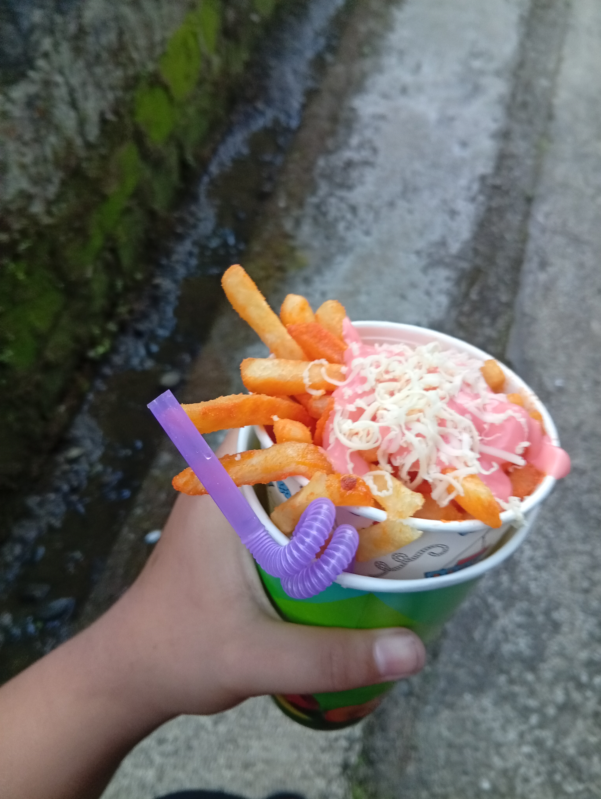

its Christine and San San we have a different hobbies Christine like playing volleyball and was very good at it but me of course i played billiard im not sure if good at it but im trying my best to be better to impress my dad the one and only coach,Christine was energetic and funny she was so fun to hang out and you cant even be bored if you are with her shes pretty and smart too=

whether they are thin shoestrings,seasoned curly twist or hearty waffle cuts,these salty potato batons have a universal appeal that elevates any meal
Dipped in classic ketchup,rich garlic oil or savory gravy,fries are more than just a side dish they are a sensory experience that brings people together and satisfied craving like nothing else
a french fry or fries is a culinary preparation consisting of aligator-cuts pieces of potato that have been deep fried or baked until crispy
potato are highly nutritious,naturally fat-free and cholesterol free vegetables that serve an excellent source of energy and essentials vitamins,when prepared without excessive heavy fats or deep fried a whole potato provide vital micro and macronutrients necessary for bodily function y>